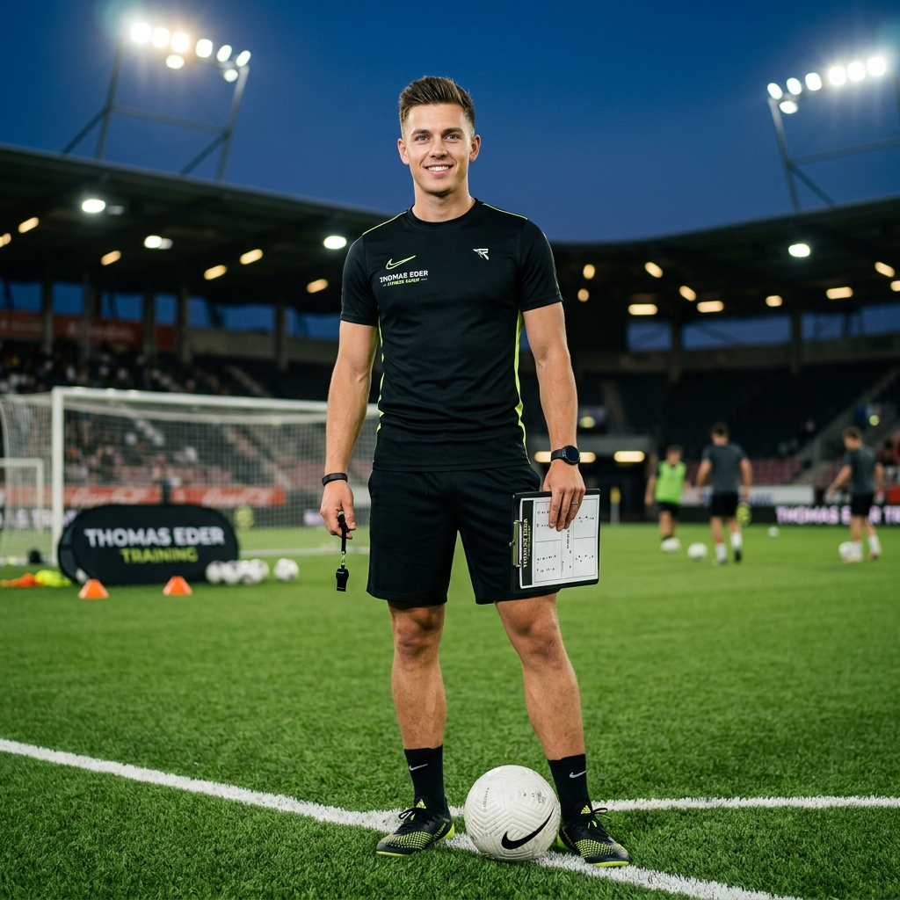
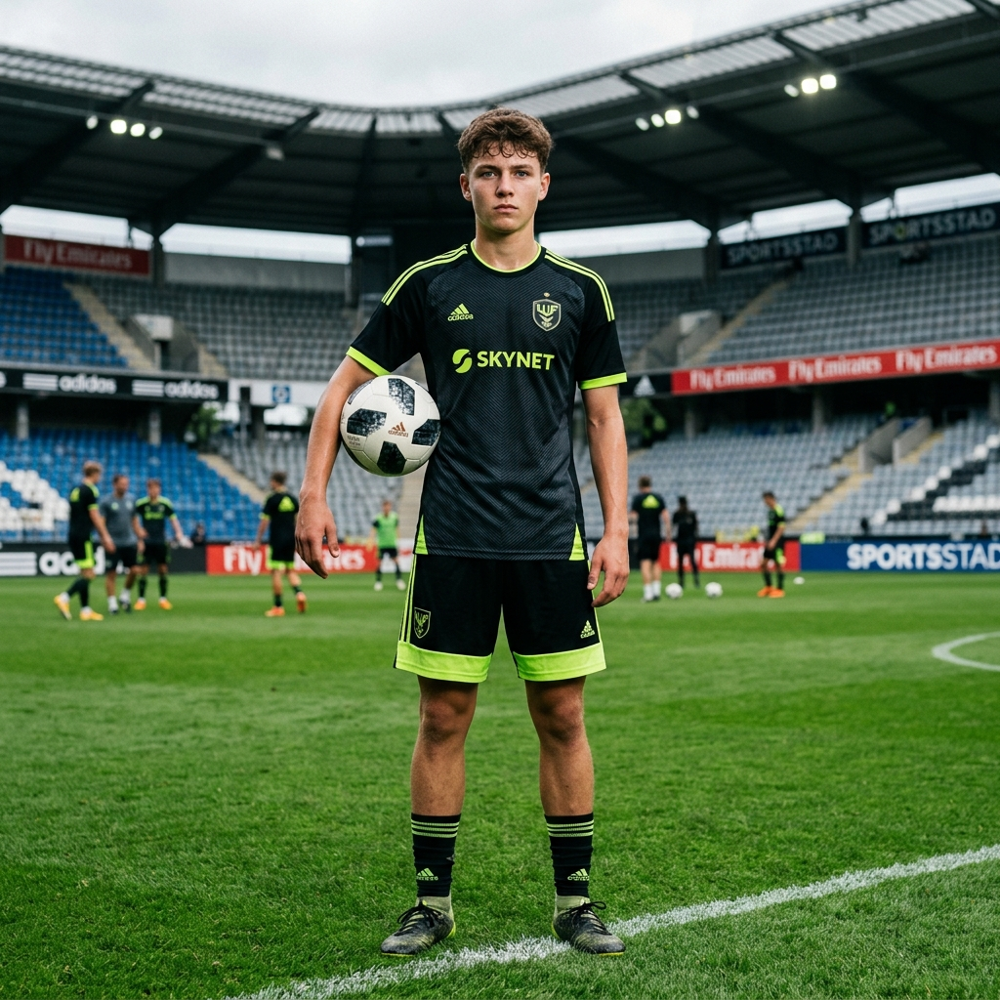
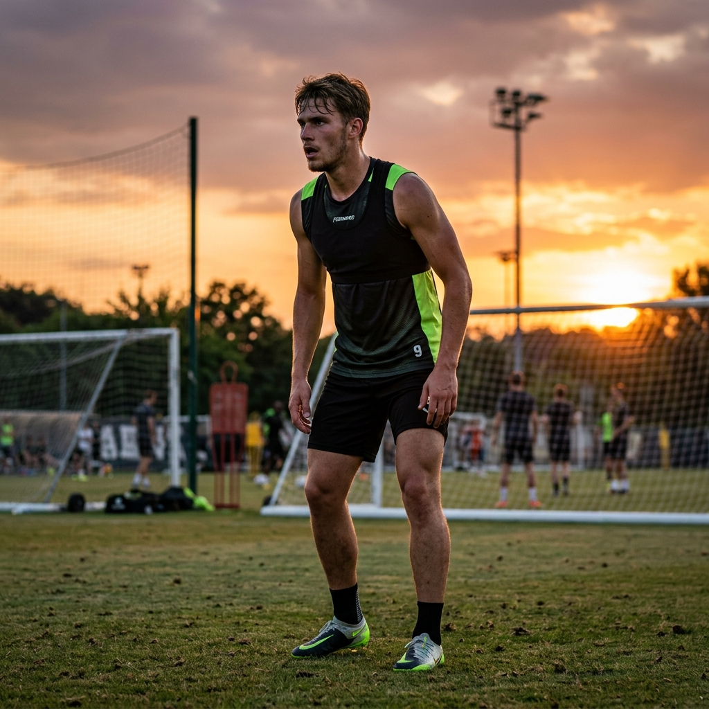

Target Personas
Unsere Strategie für FIELD READY basiert auf 3 klar definierten Archetypen: Dem Head Coach (Admin/Betreiber), dem jugendlichen Nachwuchsspieler (Hauptnutzer) und dem ambitionierten Amateur-Leistungsstürmer.

Zertifizierter Fitnessinstruktor & Fußballspezialist. Will viele Spieler gleichzeitig effizient und persönlich betreuen.
★ Kern-Persona / Hauptnutzer
Amateur-Nachwuchsspieler. Will Stammplatz sichern, +0.2s im Antritt gewinnen und klare Spieltags-Ernährung erhalten.

Kampfmannschaft Bezirksliga. Braucht verletzungsfreie Muskelmasse, In-Season Belastungssteuerung und Sprintanalyse.
Thomas Eder
Coach & Admin„Ich will Spielern nicht nur Hütchen aufstellen, sondern Athleten formen, die in der 85. Minute noch das Spiel entscheiden.“
Thomas verbindet sportwissenschaftliches Know-how mit fußballspezifischem Training und baut eine persönliche Coaching-Brand auf.
🎯 Spezifische Ziele
- ✓ Aufbau eines skalierbaren 1:many und 1:1 Coaching-Angebots.
- ✓ Betreuung von 50+ Spielern ohne Zeitkollaps durch standardisierte Workflows.
- ✓ Etablierung einer starken Personal Brand auf TikTok und Instagram.
- ✓ Hohe Retention durch sichtbare Sprint- und Kraftdaten der Schützlinge.
⚠️ Top 3 Frustrationen
- ! Zeitfresser WhatsApp & Excel: Manuelle Planerstellung und Nachrichtenschreiben fressen jeden Abend 3 Stunden.
- ! Spieler springen ab: Wenn Athleten nach 2 Wochen keine messbaren Zahlen sehen, sinkt die Compliance.
- ! Alters-Vorurteil: Mit 18 Jahren muss Thomas seine Kompetenz gegenüber Eltern und älteren Trainern doppelt beweisen.
🧠 Empathy Map: Thomas Eder
💭 Denkt (Thoughts)
• „Nehmen mich die Spieler trotz meines jungen Alters voll ernst?“
• „Wenn Lukas seine Sprintzeit um 0.2 Sekunden verbessert, spricht sich das sofort im Verein herum.“
• „Ich brauche eine Plattform, die mir das Auswerten von Videos abnimmt.“
❤️ Fühlt (Feelings)
• Große Leidenschaft und Antrieb, den Nachwuchsfußball moderner zu gestalten.
• Druck, jedem Schützling innerhalb von 24 Stunden Video-Feedback zu liefern.
• Stolz, wenn ein betreuter Spieler den Sprung in die Startelf schafft.
💬 Sagt (Sayings)
• „Die meisten Jugendspieler trainieren im Fitnessstudio komplett falsch für Fußball.“
• „Krafttraining macht dich nicht langsam – falsches Krafttraining macht dich langsam.“
🏃 Tut (Actions)
• Produziert täglich kurze Lehr-Reels und Sprint-Tipps auf TikTok.
• Analysiert Kniebeugen- und Antrittsvideos in Zeitlupe.
• Passt Periodisierungspläne an Meisterschafts-Wochenenden an.
Lukas Wallner
★ Kern-Persona„Ich will der Schnellste auf dem Platz sein und ab Minute 75 noch jeden Ball ablaufen können!“
Lukas träumt vom Aufstieg in die Kampfmannschaft. Er ist hochmotiviert, aber verunsichert über das richtige Athletiktraining.
🎯 Spezifische Ziele
- ✓ +0.2s im 10m/30m-Antritt: Erster Antritt muss explodieren, um Gegenspieler im Mittelfeld zu distanzieren.
- ✓ 90-Minuten Power: Box-to-Box Kondition ohne Laktat-Einbruch in der Schlussphase.
- ✓ Zweikampfhärte: Physische Robustheit gegen körperlich stärkere Gegenspieler.
- ✓ Matchday-Ernährung: Wissen, was 3h vor Anpfiff gegessen wird, um Magenkrämpfe zu vermeiden.
⚠️ Top 3 Frustrationen (Schmerzpunkte)
- ! 1. Kein Athletikplan im Verein: Vereinstrainer macht nur Spielformen; Lukas weiß im Fitnessstudio nicht, welche Übungen Fußballern helfen.
- ! 2. Motivation bricht ohne Feedback ein: Unstrukturierte YouTube/TikTok-Workouts bringen keinen sichtbaren Fortschritt; niemand kontrolliert seine Technik.
- ! 3. Unbezahlbare Trainer: Ein 1:1 Personal Trainer kostet 80–120 € pro Stunde – unerschwinglich vom Taschengeld.
🧠 Empathy Map: Lukas Wallner
💭 Denkt (Thoughts)
• „Mein Konkurrent im Team ist körperlich weiter als ich. Wenn ich nicht zulege, sitze ich Samstag auf der Bank.“
• „Ich will endlich einen klaren Trainingsplan auf dem Handy, den ich einfach in 35 Minuten im Gym abarbeiten kann.“
• „Hoffentlich machen mich Kniebeugen nicht unbeweglich und schwerfällig.“
❤️ Fühlt (Feelings)
• Ehrgeizig und hungrig, sich zu beweisen (Vorbilder: Bellingham, Musiala).
• Frustration bei Niederlagen und wenn ihm der Trainer mangelnde Robustheit vorwirft.
• Stolz und Selbstvertrauen, wenn er seine Sprintzeiten schwarz auf weiß sinken sieht.
💬 Sagt (Sayings)
• „Was genau soll ich zwei Stunden vor dem Spiel frühstücken, damit ich keine Seitenstiche kriege?“
• „Trainer, ich zieh nach dem Training noch ein paar Sprints durch!“
🏃 Tut (Actions)
• Schaut TikTok-Drills auf dem Weg zum Sportplatz an.
• Lädt seine 10m-Sprintzeit in die Field Ready App hoch.
• Trinkt vor dem Spiel Thomas' empfohlenen Elektrolyt-Shake.
David Steiner
Amateur-Stürmer„Auf den ersten drei Metern fällt die Entscheidung – ich brauche maximale Explosivität ohne Muskelzerrungen.“
David spielt im Erwachsenenbereich. Er will den Schritt in die Landesliga schaffen und sucht datenbasierte Leistungsdiagnostik.
🎯 Spezifische Ziele
- ✓ Maximaler 5m-Tiefenantritt aus dem Stand und der Drehung.
- ✓ Gesteigerte Reaktivkraft (Vertical Jump) für Lufthoheit im Strafraum.
- ✓ 100% verletzungsfreie Saison ohne Hamstring-Ausfälle.
⚠️ Top 3 Frustrationen
- ! Wiederkehrende Oberschenkel-Zerrungen bei Maximalsprints in der 80. Minute.
- ! Schwere Beine am Spieltag durch falsche Belastungssteuerung unter der Woche.
- ! Schwindendes Zeitfenster für den Karrieresprung mit 19/20 Jahren.
🧠 Empathy Map: David Steiner
💭 Denkt (Thoughts)
• „Ich muss jetzt mein Maximum herausholen, bevor mein Studium zu viel Zeit frisst.“
• „Ich brauche Periodisierung, die sich nicht mit meinen 2 Vereinstrainings beißt.“
❤️ Fühlt (Feelings)
• Ehrgeizig, fokussiert, aber frustriert bei Muskelverletzungen.
• Hunger nach Toren und Stammplatz in der höheren Spielklasse.